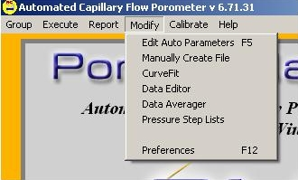
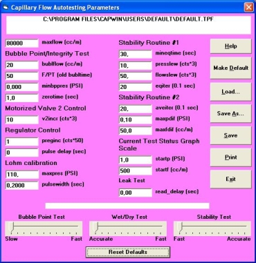
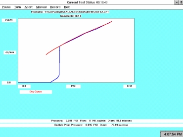

The Modify Menu allows you to customize many functions of the CAPWIN program.
An automated test has many factors. The Edit Auto Parameters option allows for easy modification of some of these factors. This screen shows the current values of the parameters in the DEFAULT.TPF file. When Edit Auto Parameters is selected, the values displayed are taken from the default parameter file (DEFAULT.TPF).
To change a value, click on the value and type in a new value. The maximum and minimum values for each parameter are listed at the bottom of the screen as the parameter is being edited. The units used for each parameter can be changed in the General tab of the Edit Preferences screen found in the Autotest option. (For example seconds can be changed to minutes.)
(The Edit Auto Parameters feature is also located under the Autotest function of the Execute Menu. It is one of the main buttons on the Autotest Screen.)
maxflow (cc/m) (Default = maximum flow for the instrument)Max Flow For Machine.
The flow limit for the test. If this flow level is reached, the test will end its current phase.
bublflow (cc/m) (Default = 2.0 cc/min)
Bubble flow. During the bubble flow test, the flow controller maintains the input flow at this value.
This parameter affects the speed of the bubble point test and, inversely, the accuracy. The larger the bublflow value, the faster the test will run. Increasing bublflow to 20 cc/m or so can be very helpful for reaching small bubble point diameters (below 1 μm) in a reasonable amount of time.
For the integrity test, the bublflow (cc/m) parameter is the number of initial increments of the pressure regulator before the test starts. This will correspond to different pressures depending on the inlet pressure of the system, so this parameter should be determined empirically through trial and error.
F/PT (old bubltime) (Default = 50)
(Flow rate / Pressure change) * Time. A calculation that sets a point at which the bubble point is recorded by monitoring the pressure and flow rate of the system. While looking for the bubble point, the calculation should remain constant since the pressure is increasing as the time increases. Once the bubble point is reached, the pressure increases more slowly causing the calculation to increase. If the pressure remains constant for this many increments (the value set as this parameter), the bubble point is taken.
minbppres (PSI) (Default = 0)
Minimum bubble point pressure. This is the pressure at which the bubble point test is set to begin. (For some samples, the initial pressurization causes the sample to stretch downward within the confines of the sample area. A small amount of flow occurs until the sample is fully stretched which gives a false flow reading at the beginning of the test. Setting a minimum bubble pressure allows you to start the test at a pressure beyond which the sample is fully stretched and flow has settled back to zero.)
zerotime (sec) (Default = 1 second)
Zero time. Sets the minimum time between regulator increment pulses. Each incrementation of the regulator causes a brief period of unreliable pressure and flow data as the system seeks equilibrium. The pulse delay insures that there is sufficient time between incrementations to assure data reliability.
v2incr (counts) (Default = 10 counts)
Valve 2 incrementation. The position of Valve 2 is measured by the computer in counts. The v2incr defines the number of counts that are considered as one increment.
preginc (counts) (Default = 1.25 cts)
Pressure regulator incrementation. This is the number of counts to increment the regulator which controls the amount of pressure let into the system.
pulse delay (sec) (Default = 2 secs)
Sets the delay between regulator increment pulses and resumption of data recording. Each incrementation of the regulator causes a brief period of unreliable flow data as the system seeks stability. The pulse delay insures that there is sufficient time between incrementation and measurement to assure the reliability of flow data.
maxpres ( PSI ) (Default = maximum pressure of machine)
Maximum pressure. This value determines the pressure at which the test (or phase of the test) quits pressurizing and begins depressurizing. It is usually the maximum pressure of the machine. If the pressure set here is reached during Lohm Calibration, the calibration should be stopped. Normally this will not happen.
pulsewidth (sec) (Default = 0.2 sec)
Pulse width. The power to run the motor that opens and closes Valve 2 is applied in pulses. This parameter is the duration (in seconds) of a single pulse. It is used to determine how much the motorized valve should be opened at each increment. Smaller values of pulsewidth will result in more data points on the Lohm Table. (The recommended value here is 0.0375.)
CapWin uses two stability tests to determine equilibrium; first it uses Stability Routine 1. If equilibrium is not established by the time specified in this parameter (mineqtime), CapWin switches to Stability Routine 2.
mineqtime (sec) (Default = 30 sec)
Minimum equilibrium time. The number of seconds set as the minimum equilibrium time is the approximated time needed to remove the effects of evaporation in most systems.
presslew (counts) (Default = 10 cts)
Pressure slew. This parameter defines the number of counts the pressure can vary by and still be considered stable.
flowslew (counts) (Default = 50 cts)
Flow slew. This parameter defines the number of counts the flow is allowed to vary by and still be considered stable.
eqiter (Default = 5)
Equilibrium iterations. The value set refers to the number of times the pressure and the flow will be read to determine if they are within the slew ranges. It is usually set at 5 to remove the effects of evaporation in most systems.
aveiter (Default = 20)
Average iterations. Number of times to read pressure and flow values in the second stability routine. Also set at 5 to remove the effects of evaporation in most systems.
maxpdif ( psi ) (Default = 0.1 PSI)
Maximum pressure differential. The value set for this parameter corresponds to the maximum difference between the minimum and maximum pressure reading in this stability routine.
maxfdif (cc/m) (Default = 50 cc/min)
Maximum flow differential. The value set for this parameter corresponds to the maximum difference between the minimum and maximum flow reading this stability routine.
To wait longer times for stability, increase the mineqtime parameter to stay in the first stability routine longer. If saw-toothed graphs are obtained from the data, the graphs can be made more regular by reducing the flowslew, presslew, and eqiter parameters.
Capwin now gives you the ability to quickly and intuitively adjust values in the Auto Parameters window. New versions of the software feature a set of slider bars for this purpose:
The Bubble Point Test slider (linked to the bublflow parameter) will adjust the speed of the bubble point test routine - and inversely affect the test accuracy. The Wet/Dry Test and Stability Test slider bars similarly offer a tradeoff between test speed and overall accuracy. Simply adjust the sliders as desired. Some experimentation may be necessary to discover the optimum settings for an acceptable compromise between speed and accuracy.
Clicking the Reset Defaults button will return the auto parameters to their default values.
The Current Test Status (below) screen is used to keep track of the test as it is running and allows you to affect some control.
Pause
Pauses the test so that you may perform any of several tasks on the machine. When paused, this menu listing changes to Resume.
Turn
Ends the current phase of the test. If you are running a single-phase test (e.g., gas or liquid permeability, pressure hold), Turn will end the test where it is. If you are in the first phase of a porometry test, Turn will end the current phase only and immediately begin the second phase.
Note that both Turn and Abort will immediately end a single-phase test. However, Turn will preserve the data accumulated up to that point in the test, whereas Abort will discard any data collected.
Abort
Ends the test. Any data points taken are not saved.
Manual
Enters manual mode.
Record
Reads the current pressure and flow as a data point without waiting for stability (for current data point only).
Bubble
Takes the current point as the bubble point. This option will only be visible before the bubble point is reached.
Help
Starts the CapWin Help System.
Graph area
Shows a graphical representation of all data points taken during the test.
Test Type status box
This box appears just below the graph and displays the phase of the test currently running. For example, in the diagram above a dry phase is running.
Status Line
Located at the bottom of the screen. Displays the current pressure and flow rate.
Cancels the automated test setup and returns to the CAPWIN Main Screen
startp ( psi ) (Default = 1 PSI)
Starting pressure. This is the starting maximum pressure for the graph of the results of the test.
startf (cc/m) (Default = 500 cc/min)
Starting flow. This value is the starting maximum flow rate for the graph.
read_delay (sec) (Default= 0 sec)
The value entered here will be the amount of time delayed before beginning to collect data at each step of pressure in a leak test.
Command buttons down the right side of the screen:
Help
Starts the CapWin Help System
Make Default
Saves the current settings to the file DEFAULT.TPF that is located in the CapWin directory. This does not save the settings being used. To save the settings use the Save As option.
Load
Loads a previously created parameter file that has been stored as a file so that those particular values will be used for the test being run.
Save As
Saves the values of the parameters to a file for use at a later time. The file selector box is displayed for entry of a file name.
Save
Overwrites the existing file with a new changes made to the parameter values.
Print
Prints a copy of the parameter settings.
Exit
Leaves the Edit Auto Parameters screen and returns control to the CAPWIN Main Screen.
| Back | Next |